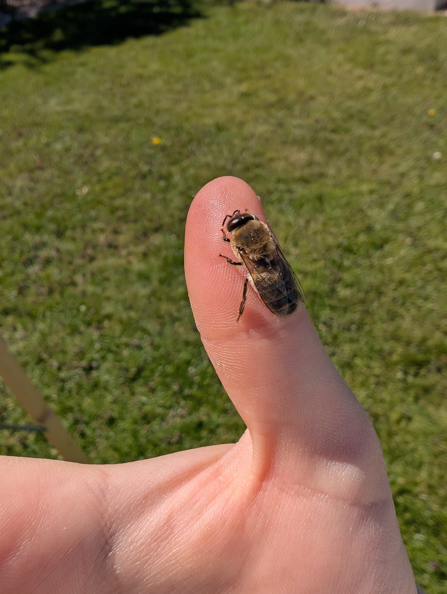
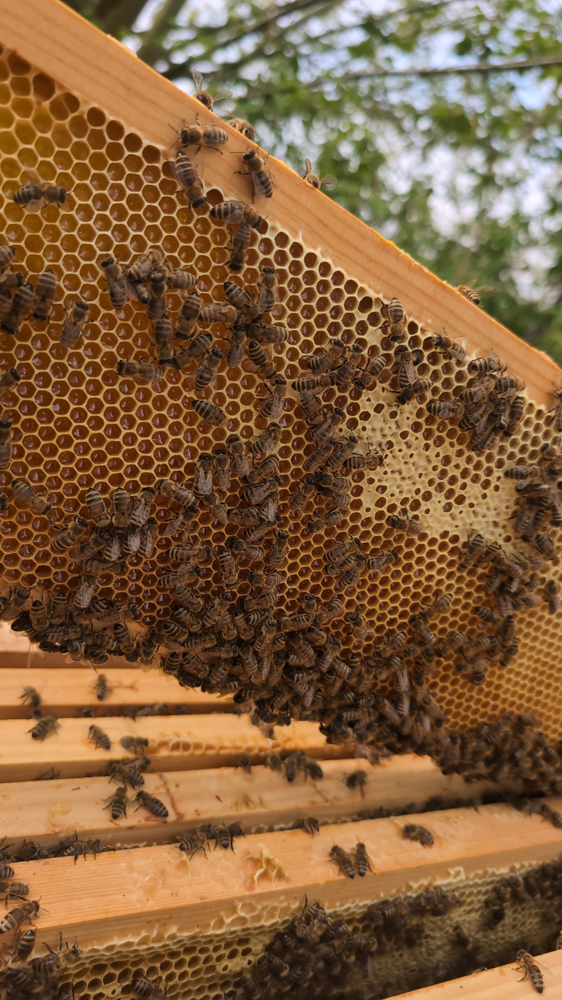
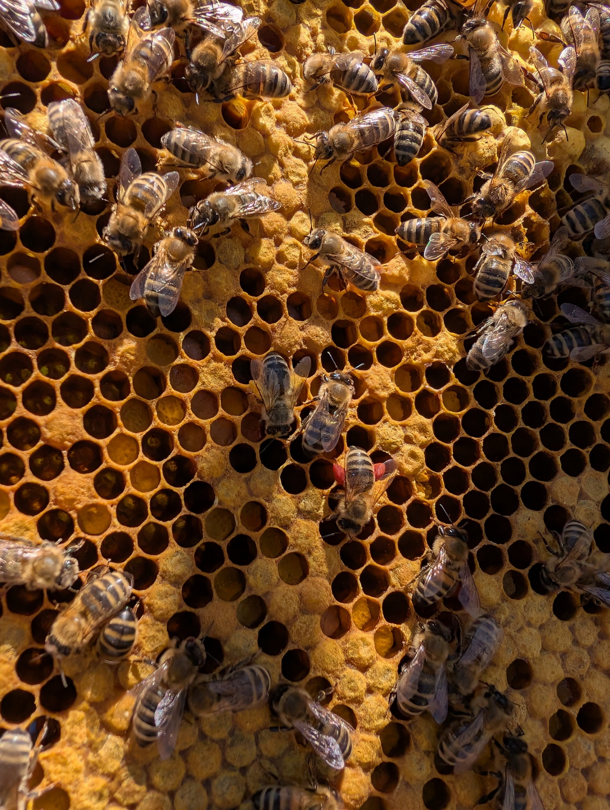
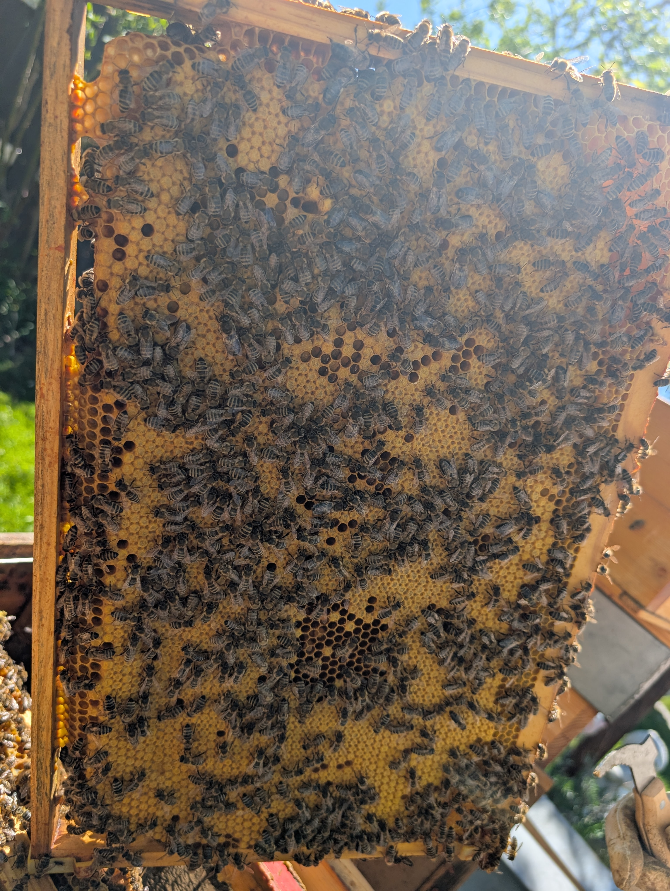
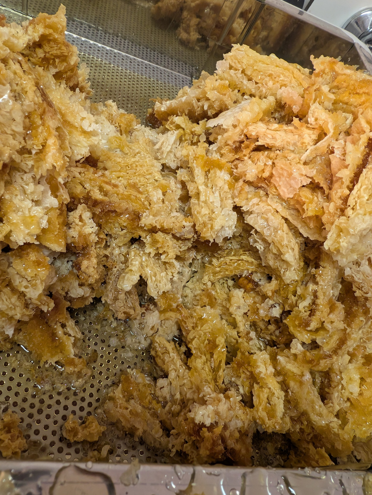
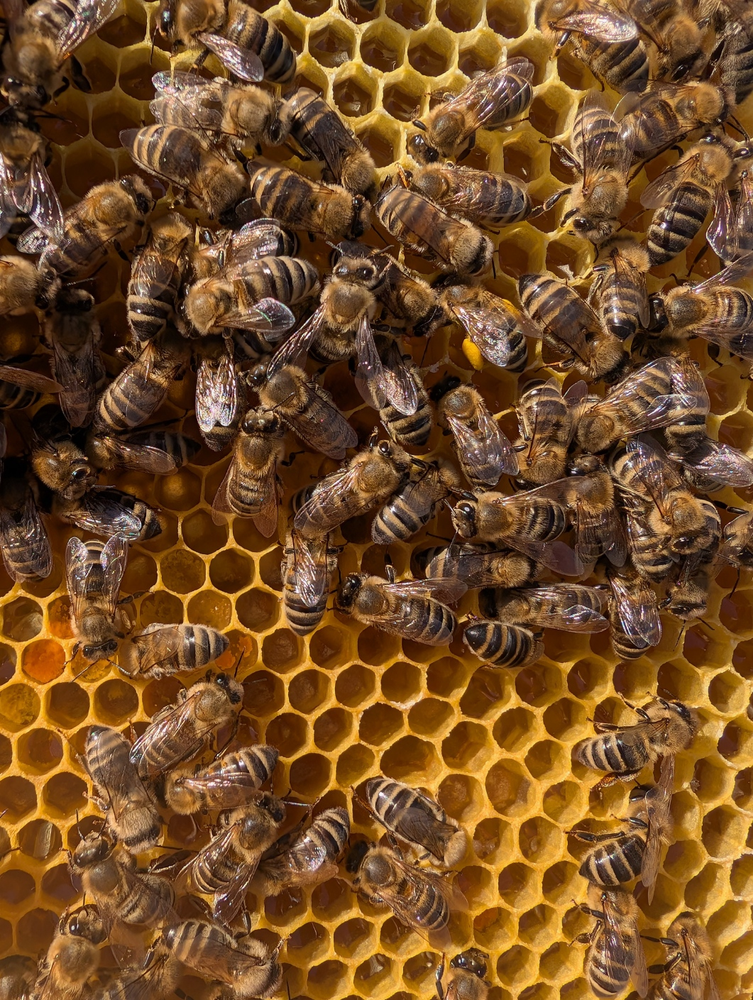
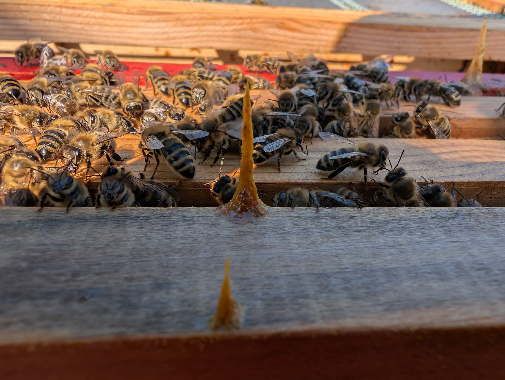
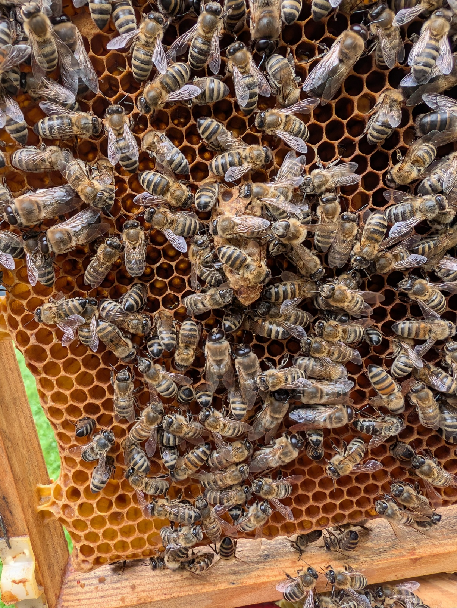

Das Bienenvolk
Die Honigbiene ist ein fleißiges Insekt, das von Blüte zu Blüte fliegt und Nektar, Pollen sowie Baumharz sammelt. Auch im Innenleben des Bienenstocks sind die Bienen unermüdlich. Die Königin sichert den Fortbestand, indem sie täglich bis zu 2.000 Eier legt, was beinahe ihrem eigenen Körpergewicht entspricht. Die Arbeiterinnen teilen sich die Aufgaben je nach Alter auf: Einige kümmern sich um die Brut, pflegen die Königin, veredeln den Honig oder verteidigen den Stock, während andere ausfliegen, um Vorräte zu sammeln. Dann gibt es noch die Drohnen, die im Frühling geboren werden und nur die Aufgabe haben, die Königin zu befruchten. Im Spätsommer werden sie durch die sogenannte Drohnenschlacht aus dem Bienenstock vertrieben.
Zunahme
Wenn die Bienen genug Nektar finden, wächst die Kolonie. Wenn das Gewicht sinkt, beginnt die Trachtpause.
Temperatur
Das Brutnest wird konstant auf 35°C gehalten, egal wie kalt oder warm es außerhalb ist.
Einblicke in den Stock
Die Königin ist einzigartig im Bienenvolk. Während der Hochsaison legt sie bis zu 2.000 Eier pro Tag.

Das sind die männlichen Bienen. Sie schlüpfen nur während der Trachtzeit. Ihre einzige Aufgabe ist die Begattung einer Jungkönigin.

In die Wachszellen legt die Königin ihre Eier. Je nach Wesen (Drohn, Arbeiterin oder Königin) dauert das Heranwachsen unterschiedlich lang.

Der gesammelte Nektar wird zu Honig veredelt. Eingelagerter Honig versorgt das Volk über das ganze Jahr hinweg.

Pollen ist die wichtigste Proteinquelle im Stock. Sammlerinnen transportieren ihn in den „Pollenhöschen“ an ihren Hinterbeinen.

Die Arbeiterin ist das am häufigsten vorkommende Mitglied im Bienenvolk. Sie übernehmen die meisten Aufgaben und je nach alter gibt es unterschiedliche Tätigkeiten.
Die Schätze der Bienen
Welche Bienenprodukte gibt es?

Das flüssige Gold. Nektar und Honigtau werden von den Bienen mit körpereigenen Enzymen angereichert und eingedickt.

Der Baustoff des Volkes. Es wird in speziellen Wachsdrüsen der Arbeiterinnen "geschwitzt" und für die Waben genutzt.

Ein echtes Superfood voller Proteine, das von den Bienen in winzigen Höschen an den Beinen in den Stock getragen wird.

Das Immunsystem des Bienenstocks. Ein klebriges Baumharz, das antibakteriell wirkt und den Stock vor Krankheiten schützt.

Der Königinnensaft. Nur die Larven, die zu einer neuen Königin heranwachsen sollen, werden ausschließlich damit gefüttert.